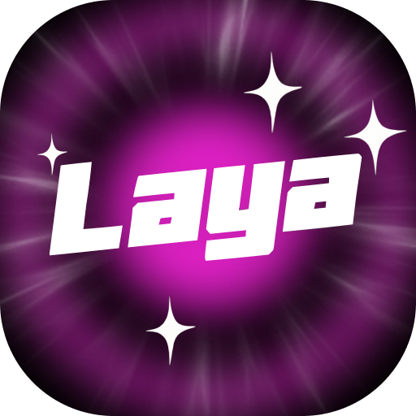
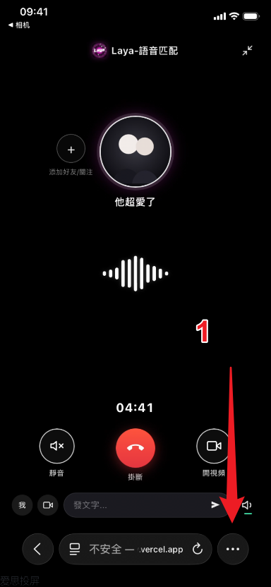
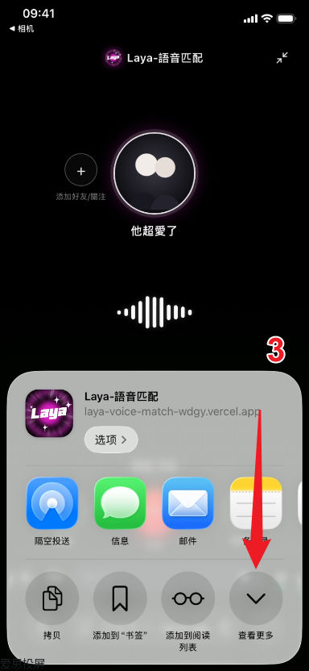
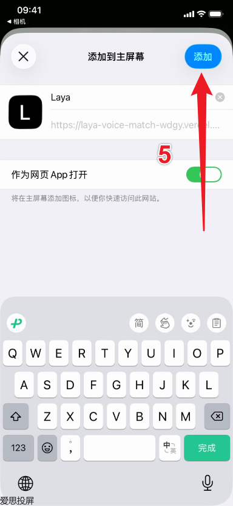

🍎 iPhone 16 Pro 真机尺寸 · 393 × 852 (导出 880 × 1920)
✋ 按住任意元素、小窗或背景画面即可拖动位置
全部复位
完成锁定
对方 · 点击对调
我 · 点击对调

Laya-語音匹配
+
添加好友/關注
他超愛了
♂ 22歲 · 天蠍座 · 溫柔低音炮
對方正在輸入...
00:22
已掛斷 · 通話時長 00:22
掛斷時間 10:50:18
靜音
掛斷
開視頻
我
Laya 视频与视角快捷控制
🎬 切换为“Laya 视频通话”模式
👤 上传 / 更换“对方视频”画面
📹 上传 / 更换“我的视频”画面
📷 开启手机真实前置摄像头
🔄 切换前后置镜头
🤍 关闭我的摄像头（白色虚化背景+头像）
🔁 切换主副视角（看对方全屏 / 看我全屏）
🪟 隐藏 / 显示右上角悬浮小窗
✨ 隐藏前景文字与UI（仅留 Laya Logo）
✋ 自由拖动调整画面位置
📞 切回纯语音匹配模式
取消
正在為您語音匹配中...
Laya 通话后台与拍摄配置
?
完成
1. 双端视频通话与摄像头设置
语音匹配模式
视频通话模式
对调主副画面
显示小窗
对方画面（默认全屏主画面，可独立上传视频与控制原声）
📁 上传对方视频
对方视频原声：开
清空对方视频
我方画面（默认右上角小窗，支持上传视频、真摄像头或关摄像头白色虚化头像）
📹 上传我的视频
📷 真实摄像头
关摄像头(白底虚化)
我的视频声音：静音
我的画面镜像：关
清空我的视频
2. 双方头像、昵称与标签（关闭摄像头时显示“我的头像”）
上传对方头像
上传我的头像（关摄像头显示）
显示标签
3. 前景文字 / UI 隐藏与 Laya Logo 独立控制
隐藏前景文字与UI：关
Laya Logo：显示
顶部标题文字：显示
隐藏UI时保留文字：关
提示：开启“隐藏前景文字与UI”后，双击屏幕任意空白区域即可快速恢复控制栏。
4. 画面位置自由拖动与大小微调（支持手动拖移任意模块）
✋ 进入画面自由拖动模式
↺ 一键恢复默认位置
悬浮小窗大小：
100%
对方视频缩放：
100%
我方画面/头像：
100%
提示：连续点击 3 次左下角“我”即可开启或锁定自由挪动；挪动后的画面位置与视频下次打开会自动保留，点击“全部复位”后即可恢复默认。
5. 通话时间（支持自定义时间、定格或随机生成）
应用时间
定格时间：关
归零
随机区间（分钟）与一键随机：
至
分钟
🎲 随机时长
刚接通(5秒~2分)
热聊(3~30分)
长聊(30~120分)
打开自动随机：关
挂断时间（留空则取当前系统时间）：
🎲 随机时刻
清空
6. 语音素材、剧本自动回复、双机房间与布局
🎵 上传语音/背景音
✨ 播放3秒匹配动画
单人拍摄自动回复剧本（发消息 2 秒后对方自动按顺序回复，用 / 分隔）：
两部手机实时互发文字与视频邀请（填写相同房间号）：
清空聊天气泡
三键布局
仅居中挂断
显示“+ 添加好友”
底部距离微调：
50px
提示：连续点击 3 次左下角“我”可挪动画面元素与视频位置；点顶部标题 5 次或右上角隐形区域可静默重置通话。
📖 使用教程（可放大缩小）
－
100%
＋
✕
步骤 1 / 6

步骤 2 / 6
步骤 3 / 6

步骤 4 / 6
步骤 5 / 6

步骤 6 / 6